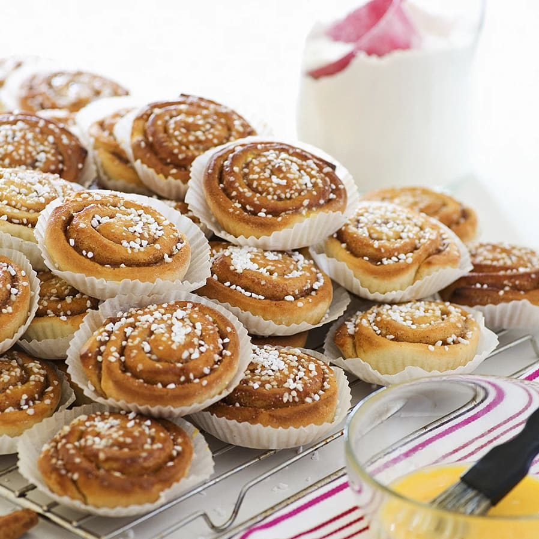

Cinnamon Rolls

About cinnamon rolls
They're tasty. You should definitely taste them. Get some milk or coffee to enjoy them with.
Ingredients
Makes: ~20 buns
Dough
- 25 g yeast
- 50 g butter or margarine
- 3 dl milk
- 1/2 dl sugar
- 1 pinch of salt
- 8 dl all-purpose flour
Filling
- 50 g lukewarm butter or margarine
- 2 tsp cinnamon
- 1/2 dl sugar
Glaze
Directions
Dough
- Crumb yeast into a bowl. Melt your butter in a pot or microwave. Add milk and heat until about body temp (37C).
Pour some of the liquid into the yeast and mix until dissolved.
- Add the rest of the ingredients, mix and knead until the dough no longer sticks to the bowl.
- Let rise for 30 minutes.
Filling
- Mix the butter/margarine, cinnamon and sugar until it becomes easily spredable.
- Knead and roll out the dough to a flat 30x40 cm plane.
- Spread the filling and roll the dough lengthwise. Cut the roll in 2 cm wide parts.
- Put the buns with the cut side up on an oven-safe pan and let them rise for 20 minutes.
Glaze
- Glaze the buns with a whipped egg and sprinkle some nib sugar on top.
- Bake the rolls in the middle of the oven at 250C for about 8 minutes. Let cool before storage.
Enjoy!